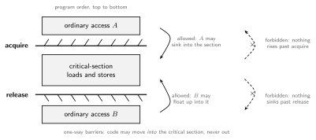

Coherence makes the caches invisible, but it says nothing about the order in which one core’s loads and stores become visible to another. A memory consistency model (memory model) is that missing contract: for a multithreaded program, it specifies which values each load may return. It is the only part of the memory system the programmer actually sees, and unlike single-threaded semantics it deliberately allows multiple correct outcomes.
A core that is perfectly correct in isolation reorders memory accesses to different addresses, because nothing single-threaded can tell:
| Reordering | Mechanism |
|---|---|
| store → store | non-FIFO / coalescing store buffer (first store misses, second hits) |
| load → load | out-of-order issue of independent loads |
| load → store | OOO scheduling; a load slips after a later store |
| store → load | the store buffer: stores wait to drain while younger loads read the cache directly |
The last one is the important case, because even a fully in-order core with a plain FIFO store buffer does it:
Lamport (1979): a system is sequentially consistent (SC) if every execution is equivalent to some single interleaving of all cores’ memory operations in which each core’s own operations appear in program order. Memory behaves as if one switch served one core at a time. All four orderings above (load/store → load/store) are preserved.
Two litmus tests capture what SC promises (all variables initially 0):
Message passing: can r2 = 0?
| Core C1 | Core C2 |
|---|---|
S1: data = NEW |
L1: r1 = flag (spin until SET) |
S2: flag = SET |
L2: r2 = data |
Dekker / store buffering (SB): can
r1 = r2 = 0?
| Core C1 | Core C2 |
|---|---|
S1: x = NEW |
S2: y = NEW |
L1: r1 = y |
L2: r2 = x |
Under SC, both outcomes are forbidden: any interleaving puts some store before both loads. Both outcomes happen on real machines, and each corresponds to one row of the reorder table: message passing breaks under store→store or load→load reordering, Dekker under store→load.
Implementing SC does not require the one-at-a-time switch. It suffices that each core presents its memory operations in program order and the coherence protocol serializes conflicting accesses (a snooping bus’s total order makes this almost free). The naive version forbids the store buffer, which is why nobody ships it. Aggressive SC (MIPS R10000) keeps the speculation machinery: loads execute out of order, but the core watches coherence invalidations; if another core writes a location a not-yet-retired load already read, the load and everything after it is squashed and replayed, exactly the precise-state rollback mechanism reused for consistency.
Total Store Order (SPARC, x86, RISC-V’s Ztso option) is SC plus one legalized optimization: the FIFO store buffer. Program order is preserved except store → load. Consequences:
r1 = r2 = 0 is
allowed; message passing still works.When the programmer needs the forbidden ordering (Dekker, spinlock
handoff), TSO provides a FENCE (mfence on
x86) that drains the store buffer before younger loads execute; atomic
read-modify-write instructions imply the same. Fences are rare in
practice, which is why TSO is considered a good compromise: hardware
keeps its store buffer, and most code never notices.
SC and TSO still force each core to present most operations in order, which serializes cache-miss latency (Caches and Virtual Memory misses vary 10-100x). Relaxed models let the hardware overlap and reorder everything by default; the programmer marks the few places where order matters. Two idioms cover almost all of them:

The asymmetry is the whole point. A full fence forbids motion in both directions and stalls both ways; acquire/release each forbid only the direction that could leak the critical section, so the hardware keeps every reordering that does not matter. Independent code migrating into the locked region is harmless (it just executes under the lock); anything escaping out would run unprotected.
RISC-V’s default model (RISC-V ISA, the A and Zam extensions interact with it) combines both idioms:
fence rw,rw is the full barrier; weaker variants
(fence r,r, fence w,w, fence.tso)
order only the named combinations.Arm (AArch64) is a close cousin (weak + acquire/release + dependency ordering); IBM Power is weaker still (stores may become visible to different cores at different times, i.e. no write atomicity).
RISC-V offers two RMW primitives: single-instruction
AMOs (amoadd, amoswap: load
and store adjacent in the global order) and the LR/SC
pair, where sc succeeds only if no other store touched the
reserved address since the lr (the general building block
for lock-free operations, and the RISC answer to compare-and-swap). A
spinlock in RVWMO:
li t0, 1
retry: lr.w.aq t1, (a0) # load-reserved, acquire
bnez t1, retry # lock held? spin
sc.w t2, t0, (a0) # store-conditional 1
bnez t2, retry # lost the reservation? retry
# ... critical section ...
amoswap.w.rl x0, x0, (a0) # release: store 0The .aq keeps the critical section from leaking upward,
.rl from leaking downward; no full fence needed.
Programmers do not reason about RVWMO directly; languages define the model one level up. C, C++, Java, and Rust all promise SC for data-race-free programs (DRF-SC): if every conflicting access pair is separated by synchronization (locks, atomics), the program behaves as if the hardware were SC, and the compiler + runtime insert the right fences/annotations underneath. Programs with data races get undefined behavior (C/C++) or very weak guarantees (Java). So the division of labor is:
mutex and atomic
onto them,The lesson mirrors the whole chapter stack: coherence keeps the caches honest per location, consistency defines cross-location order, and the strength chosen (SC, TSO, RVWMO) is a bandwidth-and-complexity trade just like every other one in Advanced Superscalar Architectures.
Author: Sai Govardhan (saigov14@gmail.com)
Courses
Textbooks
Standards, Papers, and Wikipedia
MIT License
Copyright (c) 2025 Sai Govardhan (saigov14@gmail.com)
Permission is hereby granted, free of charge, to any person obtaining a copy
of this software and associated documentation files (the "Software"), to deal
in the Software without restriction, including without limitation the rights
to use, copy, modify, merge, publish, distribute, sublicense, and/or sell
copies of the Software, and to permit persons to whom the Software is
furnished to do so, subject to the following conditions:
The above copyright notice and this permission notice shall be included in all
copies or substantial portions of the Software.
THE SOFTWARE IS PROVIDED "AS IS", WITHOUT WARRANTY OF ANY KIND, EXPRESS OR
IMPLIED, INCLUDING BUT NOT LIMITED TO THE WARRANTIES OF MERCHANTABILITY,
FITNESS FOR A PARTICULAR PURPOSE AND NONINFRINGEMENT. IN NO EVENT SHALL THE
AUTHORS OR COPYRIGHT HOLDERS BE LIABLE FOR ANY CLAIM, DAMAGES OR OTHER
LIABILITY, WHETHER IN AN ACTION OF CONTRACT, TORT OR OTHERWISE, ARISING FROM,
OUT OF OR IN CONNECTION WITH THE SOFTWARE OR THE USE OR OTHER DEALINGS IN THE
SOFTWARE.